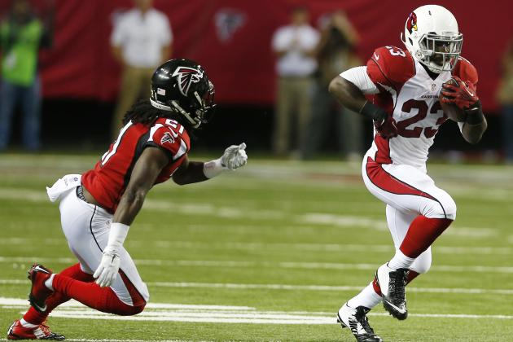
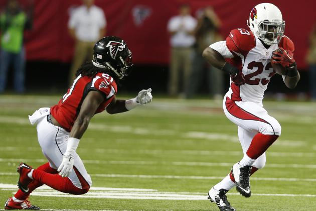
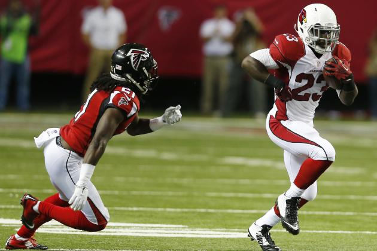
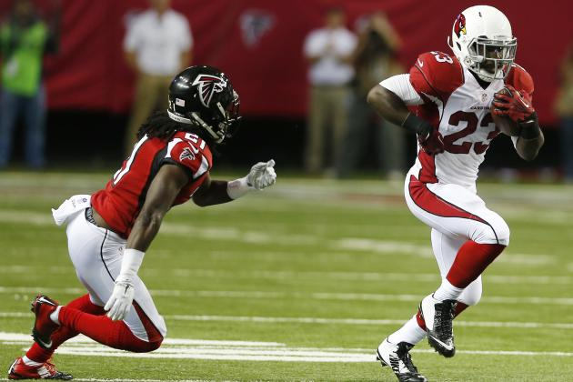

Summit Sports Group is a full-service athlete management firm dedicated to elevating our clients' careers both on and off the court.

Summit, in partnership with a select group of elite training facilities, has developed a state-of-the-art training program and schedule that will ensure that you are fully prepared for the NBA Draft Combine.
At Summit, we use our extensive network of NBA front office relationships to strategically secure and select NBA pre-draft workout opportunities in order to maximize our clients’ draft stock.
At Summit, we take a comprehensive and proactive approach to marketing that ensures Summit clients develop their personal brands and have the tools in place to maximize the value they bring to their off-the-court partners.
One of the driving principles behind Summit’s vision is ensuring our clients are aware of the possibilities that exist outside the world of basketball. Summit will work with you to plan for and achieve your business objectives through targeted development of strategic relationships and long-term planning.
We foster a family atmosphere among our clients, the Summit team and our extended network of business and community partners, creating an unparalleled representation experience individually tailored to each client. We view representation as a lifelong partnership that does not begin and end with negotiating the next playing contract or endorsement deal. Long after your playing days, Summit will be there to guide your career.
The Summit team is comprised of talented professionals with the knowledge, experience and connections necessary to help every client thrive. Our team of lawyers, seasoned negotiators, marketing experts, community relations professionals and player development coaches are available around the clock to help our clients achieve success on and off the court/field. Our extensive network of league and corporate executives ensures that all clients receive complete exposure across all platforms.
Summit is committed to providing the attention and quality representation every player deserves. As a boutique agency with resources matching those of our larger counterparts, our focus is on quality rather than quantity. Maintaining a select roster of elite clients allows us to effectively manage every last detail of each athlete's career. From the day a client joins the Summit family, they will always be our top priority.
Neal is a seasoned negotiator with a deep understanding of the NBA collective bargaining agreement. He plays a central role in contract negotiations for Summit clients in both their on and off court endeavors and has negotiated millions of dollars in playing contracts for Summit clients. An NBPA and FIBA certified agent, Neal began his career in sports working for both SFX Sports and then for WMG’s athlete management practice. At both companies he negotiated and secured multi-million dollar endorsement deals across all major categories, for many high profile professional athletes. A licensed attorney who holds an MBA from the University of Oregon’s Warsaw Sports Marketing Center, Neal has served a wide variety of clients not only in complex playing-contract negotiations but also in securing global and domestic marketing deals.
Erik’s strong relationships throughout the sports industry and in-depth knowledge of the inner-workings of the business side of sports, have proven to be an invaluable resource for Summit clients. Prior to founding Summit Sports Group, Erik was the Director of Finance for Wasserman Media Group (WMG) where he played a central role in the mergers and acquisitions that transformed WMG into one of the preeminent sports agencies in the world. Erik’s diligent commitment to the success of Summit clients, as well as his expertise in contract negotiation provide Summit clients with an unparalleled level of support. During his undergraduate studies at Boston College, Erik earned a bachelor’s degree from the Carroll School of Management and played football.
A licensed attorney in both Washington and Californiawith a strong background in sports and entertainment, Tyler provides Summit clients with quality representation and legal advice. Tyler previously worked in the business and legal affairs department of The Weinstein Company, a major lm studio where he worked on multi-million dollar production, distribution and talent agreements. He also worked at a leading entertainment law rm where he contributed in the representation of several prominent recording artists and entertainers. Tyler is an expert in the NBA’s Collective Bargaining Agreement and plays an important role on Summit’s contract negotiation team. Further, Tyler provides valuable guidance to Summit clients in important matters such as protecting their intellectual property assets and business transactions.
Mike brings years of sports marketing and social media experience to the Summit team. Mike is instrumental in developing and managing the social media assets of Summit clients. He has a proven track record of leveraging these assets to add value for corporate partners in order to justify larger compensation packages and create new partnership opportunities. After working for a preeminent entertainment marketing and public relations agency, Mike worked for both the Action Sports World Tour and Dew Tour where he was intimately involved with the creation and implementation of athlete marketing strategies. Mike has served as a marketing consultant for elite brands and organizations including adidas, the United States Tennis Association and the Movember Foundation. Mike has his MBA in Sports Marketing from the University of Oregon Warsaw Sports Marketing Center.
An accomplished attorney, Chris has spent over ten years representing professional athletes, guiding them through each phase of their careers. Chris provides strong relationships throughout the sports industry and extensive experience negotiating lucrative playing and endorsement contracts. A seasoned representative, Chris provides Summit clients with a zealous advocate committed to their on and off the eld endeavors. Chris played football at Brigham Young University and later attended law school at Pepperdine University. Chris’s two brothers, Keith and Kevin, both played in the Pac-10 (now Pac- 12) and the NFL. Keith played linebacker for Oregon State and the Bills, while Kevin played safety for USC and the Chargers.
Kevin brings years of basketball industry experience and relationships to the Summit team. Prior to joining Summit, Kevin worked at the Gazzelle Group, an industry leading marketing rm, specializing in the representation of basketball coaches, and the marketing and production of major basketball events. Kevin serves as an invaluable resource to Summit clients and assists with all aspects of representation including player marketing, statistical analysis, client services. Kevin played basketball at Quinnipiac University from 2008-12, where he majored in Finance and Economics.